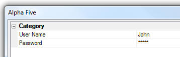
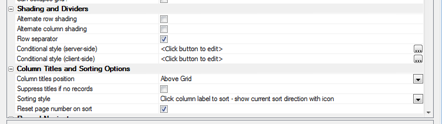

Property Grids
Property Grids - Search for Property - a5_PropGridSearch() - You can now easily add a 'Find Property' feature to your own Property Grids using the new a5_PropGridSearch() function. The following Xbasic shows how this is done:
v.Item1 = ""
v.item2 = ""
v.item3 = ""
dim pg as p
dim pg.settings as p
dim pg.object as p '<<<----------------This statement is new and must be added.
dim pg.def as c
pg.def = <<%str%
^^Category
state=opened
++Item
var=v.Item1
++Item2
var=v.Item2
++Item3
var=v.Item3
%str%
ui_dlg_box("Alpha Five",<<%dlg%
{hyperlink=Search Properties!search};
{propgrid=100,20pg};
<10&OK><10&Cancel>
%dlg%,<<%code%
if a_dlg_button = "search" then
a_dlg_button = ""
a5_PropGridSearch(pg)
end if
%code%)
Property Grids - Password fields - You can now specify that a field in a property grid should be masked. To do so, include the command 'passwordMask=true' in the property grid definition. Example:
v.UserName = "John"
v.Password = "alpha"
dim pg as p
dim pg.settings as p
dim pg.def as c
pg.def = <<%str%
^^Category
state=opened
++User Name
var=v.UserName
++Password
var=v.Password
passwordMask=true
%str%
ui_dlg_box("Alpha Five",<<%dlg%
{propgrid=100,20pg};
<10&OK><10&Cancel>
%dlg%)

Property Grids - Always Show Buttons - There is a new option to always show buttons for combo boxes, edit-combo boxes and smart fields even when the property does not have focus (as shown in the screen below). The advantage of turning this property on (which is now on by default) is that you can open a combo box or smart field on a property that does not currently have focus with a single click, rather than two clicks.

To turn this property on/off in a Property Grid, include the following command in the Property Grid definition:
dim def as c
def= <<%str%
showbuttonsalways=false
^^Category1
state=opened
++Item
var=item
........
Property Grids - View/Settings - You can control the default behavior for Property Grids regarding whether all buttons for combo boxes and smart fields are always shown or not. Starting with this version, all buttons on the Grid are always shown by default. If you prefer to only show buttons when the property has focus, you can go to View/Settings/Preferences/Property Grids and turn off this feature.
To set the preference using Xbasic (for example, in your Autoexec), you can use this code:
dim p as p
p.dummy = ""
registry.load_settings("preferences",p)
p.propgrid.AlwaysShowButton = "Show" 'or 'Hide'
registry.save_settings("preferences",p)